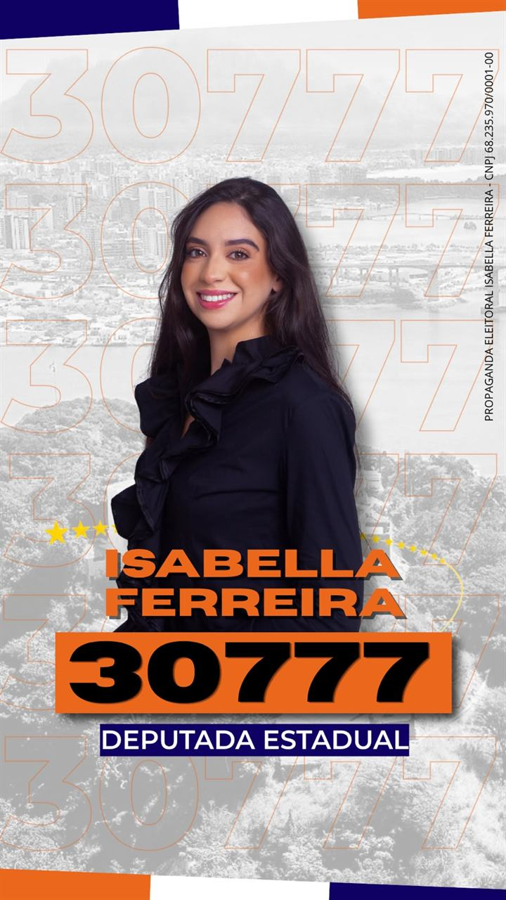

Liberdade e responsabilidade
Cada pessoa tem o direito de conduzir sua vida e buscar a felicidade à sua maneira.
Deputada Estadual · Espírito Santo
Visão de mundo ampliada, compromisso com quem vive as desigualdades do Espírito Santo todos os dias. Empreendedorismo, segurança, meio ambiente e fiscalização com propostas concretas para o nosso estado.
Quem sou eu
Olá, prazer, me chamo Isabella Ferreira, tenho 25 anos, sou nascida e criada em Vitória, como gostamos de falar, sou capixaba da gema. Desde pequena tenho o sonho de ajudar as pessoas, um sonho que, ao longo dos anos, foi ganhando forma e direção, e que hoje me traz à minha primeira eleição.
Eu estou concluindo a minha graduação acadêmica em Relações Internacionais pela Universidade Vila Velha (UVV), minha formatura é em dezembro deste ano (2026). Foi estudando ciência política, nos primeiros períodos da faculdade, que um sentimento foi criado dentro de mim: a certeza de que eu não conseguiria mais olhar para os problemas do meu estado como algo distante da minha realidade. E entendi, ali, que todo problema social tem uma estrutura por trás.
A formação me fez perceber de maneira sistêmica a forma de olhar para os problemas do Espírito Santo, não como fatos isolados, mas como parte de um sistema de estruturas que se repetem e se naturalizam ao ponto de parecerem inevitáveis. Entender o Espírito Santo exige, antes de tudo, recusar a ideia de que pobreza, violência e falta de oportunidade são acasos, muitas vezes é apenas descaso com a população.
Foi vivendo fora do Brasil, na Itália, entre 2022 e 2024, que essa forma de pensar ganhou profundidade. Morar fora desloca a gente do próprio contexto e permite enxergá-lo de fora. O contato direto com outra sociedade, outra economia e outra cultura não apenas ampliou minha visão de mundo, mas permitiu que eu compreendesse a desigualdade não como uma condição exclusivamente brasileira, mas como um fenômeno que assume formas distintas em diferentes lugares, ainda que guarde lógicas semelhantes de exclusão.
Foi ali que o conceito de segurança humana deixou de ser uma teoria e virou minha perspectiva de vida! Proteger uma população não é apenas garantir sua sobrevivência física, e a ausência de violência, mas sim a garantia e fornecimento dos direitos básicos que uma sociedade precisa para viver, como segurança econômica, segurança alimentar, segurança de educação e saúde, e de pertencimento a uma comunidade.
Voltar com esse olhar mais amplo significou também voltar mais atenta ao que precisa mudar na nossa própria casa, no Espírito Santo. É desta combinação entre base acadêmica e experiência de mundo, entre a formação que explica as estruturas e a vivência que revela seus efeitos na vida das pessoas, que nasceram minhas propostas! Pensadas para gerar oportunidades reais, proteger quem mais precisa e enfrentar as desigualdades regionais que ainda dividem o litoral e o interior do nosso estado.
O que me move
Cada pessoa tem o direito de conduzir sua vida e buscar a felicidade à sua maneira.
Concentrado no essencial: saúde, educação e segurança, sem privilégios nem desperdício.
Combate à corrupção e compromisso com a segurança jurídica e a independência dos Poderes.
Eu defendo a liberdade individual com responsabilidade e respeito ao próximo, reconhecendo o direito de cada pessoa conduzir sua vida e buscar a felicidade à sua maneira. Acredito no livre mercado, na propriedade privada, na livre iniciativa e em uma menor intervenção do Estado na economia, criando condições para o empreendedorismo, a inovação e a geração de empregos.
Também reafirmo meu compromisso com a democracia, a igualdade perante a lei, a segurança jurídica e a independência entre os Poderes. Defendo um Estado mais enxuto, eficiente e concentrado no que é essencial, especialmente saúde, educação e segurança. Combato a corrupção, os privilégios e o desperdício de dinheiro público, defendendo uma gestão transparente, íntegra e profissional.
Acredito que todos devem ter acesso a oportunidades para construir o próprio futuro com liberdade e dignidade. Para isso, é fundamental garantir serviços públicos de qualidade, valorizar o mérito e promover um ambiente econômico, jurídico e fiscal seguro, pois o emprego e a geração de renda são os melhores caminhos para ampliar a autonomia e melhorar a vida das pessoas.
Propostas concretas
Os quatro eixos que conversam entre si: liberdade para empreender, segurança para viver, um estado preparado para o futuro ambiental e fiscalização firme dos recursos públicos.
O Brasil enfrenta baixo crescimento e produtividade devido à burocracia, aos tributos complexos, ao crédito caro, à insegurança jurídica e à infraestrutura precária, obstáculos que prejudicam principalmente os pequenos negócios. Para fortalecer a economia do Espírito Santo, são necessárias reformas que simplifiquem o ambiente de negócios, ampliem o crédito e a concorrência e promovam o empreendedorismo, a qualificação profissional e o turismo.
A segurança pública é uma das principais preocupações dos brasileiros, diante de altos índices de crimes e da expansão de facções e milícias. É preciso também fortalecer a proteção de mulheres, crianças, adolescentes e idosos: a violência doméstica provoca mortes, traumas e perda de autonomia, enquanto o medo e a falta de acolhimento alimentam a subnotificação e a reincidência.
A política ambiental deve conciliar preservação e desenvolvimento econômico, combatendo o desmatamento ilegal e transformando a bioeconomia em setor estratégico. É preciso modernizar o licenciamento ambiental, eliminar os lixões e preparar as cidades para enchentes, secas e deslizamentos, unindo conservação, segurança e crescimento sustentável.
A fiscalização do governo estadual será a prioridade central do meu mandato, caso eleita deputada estadual. Parto do princípio de que o exercício do poder público exige mecanismos permanentes de controle e responsabilização, e que ao Poder Legislativo cabe papel decisivo nessa função de fiscalizar.
A atuação fiscalizadora que proponho busca articular o fortalecimento dos canais institucionais de controle e, simultaneamente, garantir que a população tenha acesso real à informação sobre como o Estado administra os recursos que lhe pertencem.
Vou acompanhar de perto os atos do governador, o desempenho das secretarias e a execução de cada recurso público, exigindo que o orçamento seja conduzido com legalidade, transparência, eficiência e resultados efetivos para a população capixaba.
Esse acompanhamento se traduzirá em instrumentos de atuação parlamentar:
Diante de indícios de irregularidade, adotarei os canais institucionais adequados:
Meu compromisso é com a sua proteção e com a integridade da gestão pública, entendida não como formalidade burocrática, mas como condição necessária para que os recursos do Estado atendam, de fato, às necessidades da população do Espírito Santo. Fiscalizar não é função acessória do Legislativo, mas sua razão de ser mais primária: a representação política só se sustenta enquanto acompanhada de mecanismos efetivos de responsabilização.
Como apoiar
Nossa campanha não é financiada por grandes verbas partidárias, muito menos tem o dinheiro de poderosos. Nossa força vem de quem acorda cedo e conhece os problemas de verdade. Por isso, o seu apoio é o nosso combustível.
Quando você compartilha uma proposta ou faz uma doação de qualquer valor, você investe em um mandato independente e com as mãos limpas! Esse valor nos ajuda a imprimir panfletos, visitar mais bairros e levar ideias inovadoras para quem foi esquecido pela política tradicional. Qualquer ajuda faz uma diferença gigante e é um voto de confiança para o futuro.
Vamos mostrar que a força do povo é maior que o sistema. Apoie e colabore!

Doe via Pix
Chave Pix (CNPJ)
68.235.970/0001-00
Chave Pix em nome de Isabella Ferreira. Copie a chave e faça a doação diretamente pelo app do seu banco.
Fale comigo
Tem uma proposta, dúvida ou quer se juntar à campanha? Envie uma mensagem ou fale comigo diretamente pelas redes sociais.